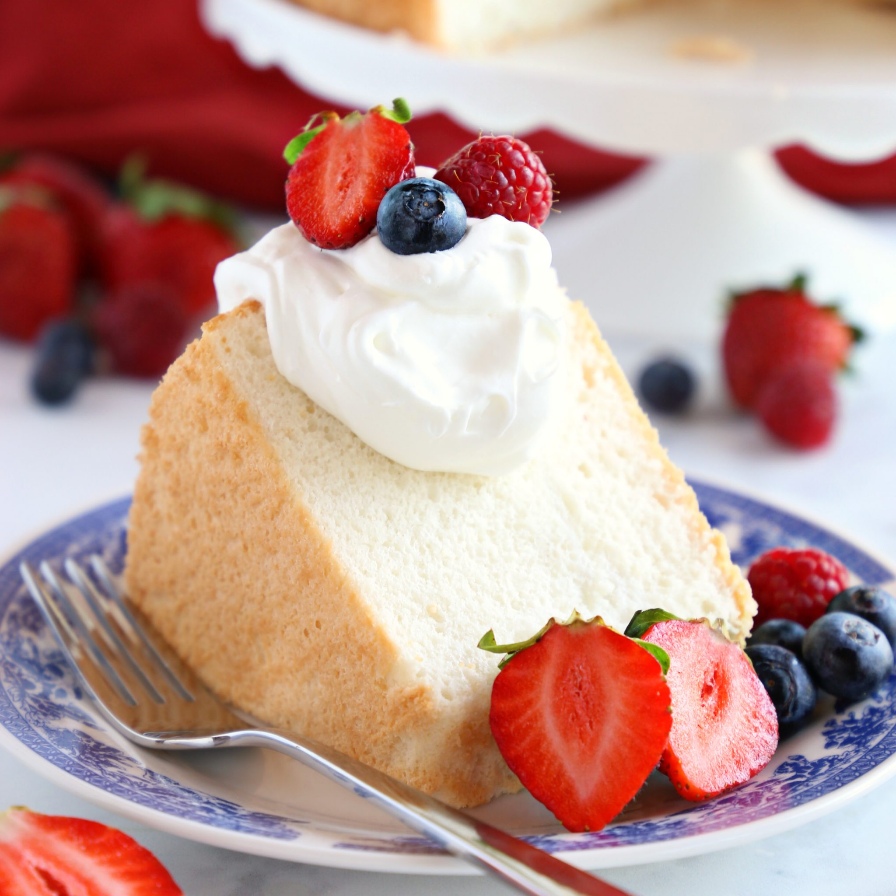

Angelcake with buttercream frosting
Back to home

Level: easy
Total: 1 hr 55 min
Yield: 12 servings
Ingredients
Angel Food Cake:
- 1 cup cake flour
- 1/4 teaspoon kosher salt
- 15 large egg whites, at room temperature
- 1 teaspoon cream of tartar
- 1 1/2 cups plus 2 tablespoons granulated sugar, sifted 3 times
- 1 teaspoon vanilla
Frosting:
- 4 cups powdered sugar
- 2 sticks salted butter, softened
- 1/4 cup heavy cream
- Yellow food coloring
Directions
- For the angel food cake: Preheat the oven to 350 degrees F.
-
Combine the cake flour and salt in a medium bowl and sift together 5
times. Set aside.
-
In a large bowl, with an electric mixer fitted with the whisk
attachment, beat the egg whites until frothy (lots of bubbles but still
liquid and loose). Add the cream of tartar and beat on high until stiff,
4 to 5 minutes. With the mixer on medium low, slowly sprinkle in the
sifted granulated sugar. Fold in the sifted flour mixture gently until
it's all combined. Sprinkle the vanilla into the bowl and fold gently.
-
Spoon the batter into an angel food or tube pan (preferably with cooling
legs)--make sure there's no grease or butter in there! Smooth the top
and bake until a wooden skewer stuck all the way to the bottom comes out
clean, 35 to 45 minutes. (Don't open the oven while it's baking!)
-
Carefully remove the cake from the oven and immediately invert it onto
its cooling legs (see Cook's Note). Let the cake cool completely while
upside-down.
-
For the frosting: Beat the powdered sugar, butter and cream in a large
bowl with an electric mixer until very light and fluffy. Add a few drops
of yellow food coloring as desired.
-
Carefully remove the cake from the pan and transfer it to a cake plate
upside-down, so that the end that was stuck to the bottom of the pan is
now facing up. Frost the cake all over.